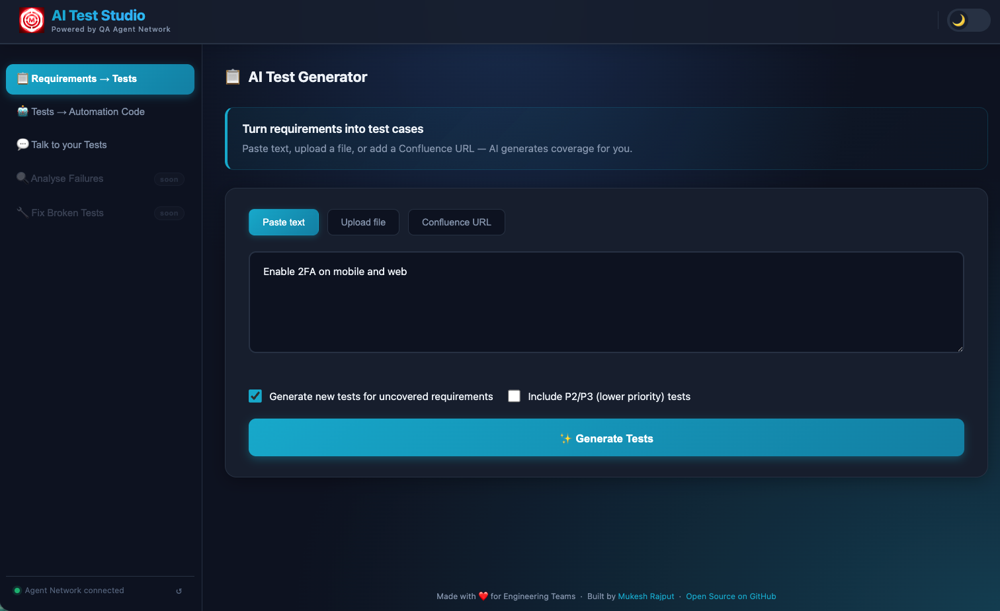
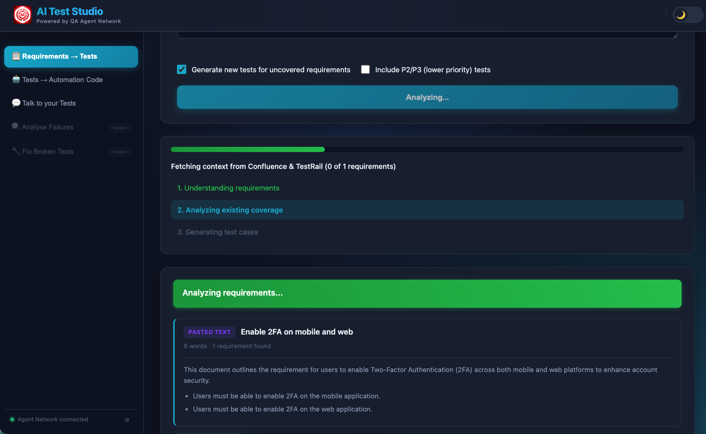
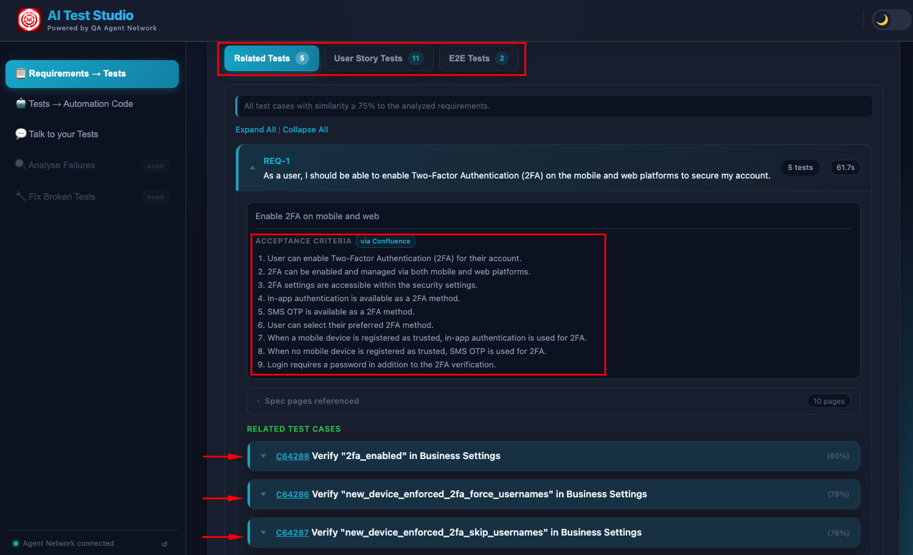
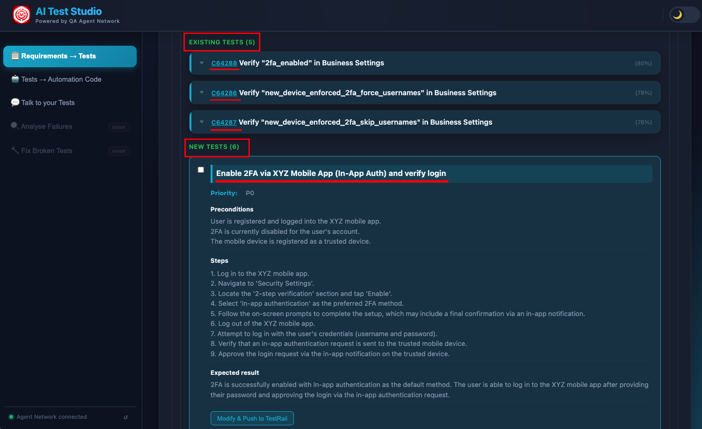

Paste your requirements — or upload a PDF, DOCX, or point to a Confluence page — and the AI generates complete, structured test cases in under 60 seconds. But the real trick is what happens before the first test case is written: the system cross-references your entire existing TestRail coverage and only generates tests for requirements that are not already covered.
Every QA team has the same problem: requirements keep coming, and writing test cases is slow. Not because it's difficult — but because it's repetitive, detail-heavy work that needs to be done consistently across every feature, every sprint, every release. And even when you write the tests, you're not always sure whether you've duplicated something that already exists in TestRail from six months ago.
The AI Test Generator solves both problems simultaneously. It generates the tests, and it knows what you already have.
How It Works
An engineer opens the AI Test Studio portal and navigates to the AI Test Generator tab. The interface offers three input modes, so you can work with requirements however they actually live in your organisation:
- Paste text — directly type or paste requirements into the text area. This is the fastest path for ad-hoc generation during a sprint planning session.
- Upload a file — supports PDF, DOCX, XLSX, and PPTX. The system extracts the requirement statements from the document before passing them to the pipeline. You don't need to copy anything manually.
- Confluence URL — paste the URL of any Confluence page. The system fetches the page content through the Confluence API and extracts the requirements from the body.
Crucially, the system doesn't immediately call an LLM. It first performs a RAG lookup against ChromaDB — the same vector store that holds all synced TestRail test cases and uploaded documents. This coverage analysis step identifies which requirements already have test cases written against them. A checkbox on the interface lets you choose to generate only for uncovered requirements — so you never duplicate what your team has already built.

The Requirements → Tests tab — three input modes, and a checkbox to only generate tests for uncovered requirements (skips duplicating existing TestRail coverage).
The result is a coverage-aware generation pipeline. Not just "generate test cases from this text" — but "generate test cases for the parts of this text that we haven't already tested."
What the AI Actually Does
The generation pipeline runs in three internal phases, all streamed live to the browser so you can watch the work happen in real time rather than staring at a spinner.
The LLM parses the input into discrete, atomic requirements. If a file was uploaded, it first extracts the requirement statements from the raw document content — pulling them out of prose, tables, bullet lists, or whatever structure the document uses. Each requirement is treated as an independent unit, which is what allows the system to track coverage at the individual-requirement level rather than the document level.
Before writing a single new test, the system queries ChromaDB and returns the existing TestRail test cases that already cover your requirements — displayed directly in the UI. These aren't just signals to skip generation; they're actionable results. An engineer can see "we already have 4 tests for this login requirement" and confirm them as covered without writing anything new. You get the value of the existing test suite surfaced to you, requirement by requirement, without opening TestRail and searching manually.
Each requirement is scored by coverage depth. Requirements with strong semantic matches in TestRail are marked as already-covered. Requirements with partial matches are flagged as needing updates — the AI suggests exactly what to change in the existing case. Requirements with no matches are queued for generation. This three-way classification means you always know what exists, what needs updating, and what's genuinely missing.
For each uncovered requirement, the LLM generates a fully structured test case: test type (API, Functional, or End-to-End Flow), preconditions that must be true before execution, numbered steps with clear, unambiguous actions, expected results for each step, and a priority (P1, P2, or P3) based on the nature of the requirement. Each requirement is processed individually so results appear progressively — you see test cases arriving one by one as the AI works through the list.

Requirements pasted — four login-related requirements ready for analysis. The "Generate new tests for uncovered requirements" checkbox ensures the AI cross-references existing coverage first.

Analysis streaming in real time — "Fetching context from Confluence & TestRail" shows the system cross-referencing existing coverage. Each requirement is processed individually so you see results appear progressively.

Existing tests surfaced from TestRail — tests that already cover your requirements, shown directly in the UI so your team knows exactly what can be reused without writing anything new.

Newly generated test cases — structured with preconditions, numbered steps, expected results, and priority, covering only the requirements that had no existing TestRail coverage.
The entire process — from clicking Generate to seeing fully formed test cases — takes under 60 seconds for a typical set of 5–10 requirements. For larger uploads, the streaming output keeps you informed as the pipeline works through each requirement in sequence.
The Knowledge Base Behind It
The quality of the coverage analysis depends entirely on what the admin has loaded into ChromaDB. The more complete the knowledge base, the better the system is at detecting what's already covered versus what's genuinely new. There are three sources:
The admin dashboard shows exactly how much has been ingested — number of documents, number of vector chunks, number of TestRail cases synced. This transparency is intentional: you can see exactly how deep the knowledge base is before you run a generation.

Admin dashboard — documents ingested into ChromaDB, TestRail cases synced. This knowledge base is what powers the coverage gap detection and prevents duplicating existing tests.
The TestRail sync streams its progress in real time. You can watch each test case being pulled, chunked, and embedded into ChromaDB as the sync runs. After a full sync, the entire test suite becomes queryable by semantic similarity — not just keyword search.

TestRail sync in progress with full streaming log. Every test case is pulled, chunked, and embedded into ChromaDB — making the entire test suite queryable by the AI during generation.
Why semantic search matters for coverage detection
Keyword matching won't catch that "user cannot log in with expired credentials" and "authentication fails for lapsed account" are the same requirement phrased differently. Semantic embedding does. ChromaDB stores vector representations of every test case, so when a new requirement arrives, the system finds coverage matches based on meaning — not string similarity. This is what makes the duplicate-prevention reliable rather than approximate.
Pushing to TestRail
After the AI generates test cases and you've reviewed them in the UI, a single click pushes everything directly to TestRail via the API. There's no copy-pasting, no manual entry, no reformatting. The system handles the entire submission:
- Project and suite mapping — each test case is pushed to the correct TestRail project and suite, configured by the admin at setup time.
- Structure preservation — preconditions, numbered steps, and expected results are preserved exactly as generated. TestRail receives them in the native field structure it expects, not as a blob of text.
- Tagging — newly pushed cases are tagged to distinguish them from manually authored tests. This matters when the triaging agent later references coverage, and when teams want to audit AI-generated coverage separately.
Because the system already cross-referenced existing coverage before generating, everything it pushes to TestRail is genuinely new. You're not cluttering your test suite with duplicates — you're filling actual gaps.
LLM Options
The system is multi-LLM and designed to be swapped without code changes. The active LLM is configured via a single environment variable. Three options are supported out of the box:
Swapping between providers requires changing one line in the environment configuration. No prompts are hardcoded to any specific provider's response format, and no Python code needs to change. This makes it straightforward to run cost comparisons or move to a different provider as the landscape evolves.
What used to take 30–45 minutes, now takes under 60 seconds
A senior QA engineer writing test cases manually for a set of 10 requirements — decomposing them, checking coverage, writing steps and expected results, entering them into TestRail — takes around 30–45 minutes on a good day. The AI Test Generator does the same work in under 60 seconds, with coverage awareness built in. That's not a marginal improvement. It changes what's feasible in a sprint.
Next: The Test Authoring Agent
Test generation creates the test plan. The Test Authoring Agent goes one step further — it writes the automation code, validates it against a real browser, fixes any compilation failures, and raises a GitHub PR. All from plain English.